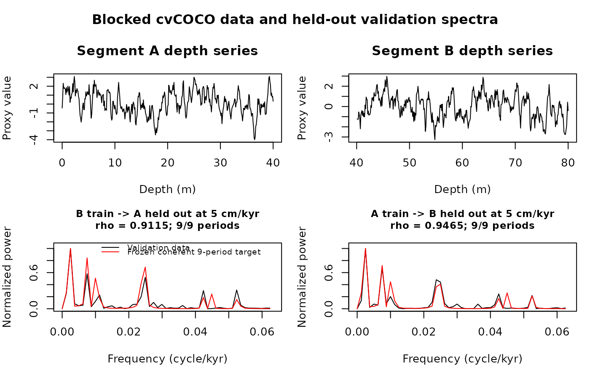
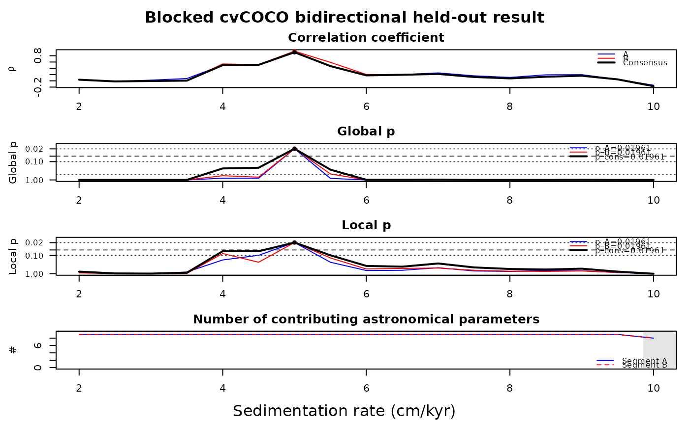
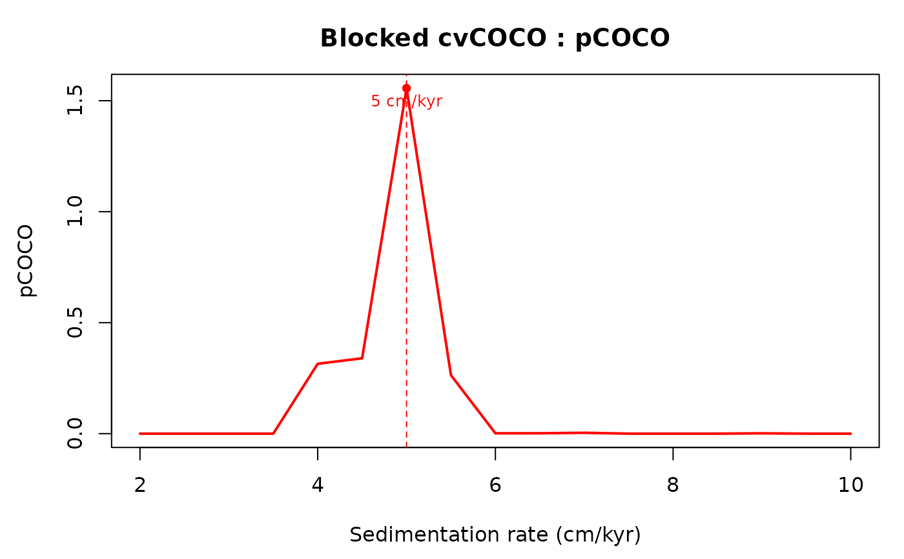
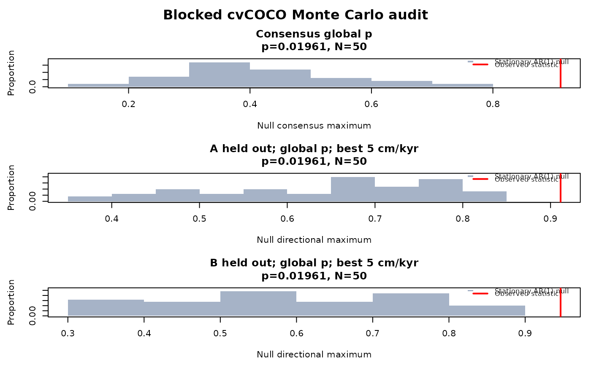

The cvcoco function performs the bidirectional
held-out ("cross-validated") correlation coefficient (cvCOCO) test of
Acycle for astronomical forcing in a depth series. The cleaned record is
split into two folds: two contiguous halves at the depth midpoint
(method = "blocked", Blocked cvCOCO, the Acycle public default) or
the odd and even observations (method = "interleaved", Interleaved
cvCOCO). Each fold is linearly interpolated to its own median spacing.
In each direction one fold is used for training: at every tested
sedimentation rate the energies in four one-Rayleigh union bands (long
eccentricity, short eccentricity, obliquity, precession) are
leakage-corrected with an exact nonnegative least-squares solve of the
finite-record 4x4 leakage matrix, and the rate with the highest
spectral correlation gives four trained group amplitudes. These
amplitudes are frozen and the held-out fold searches its own
sedimentation rate (validation). The same-rate minimum of both
directional validation curves is the consensus curve. A single outer
stationary AR(1) Monte Carlo reproduces the complete bidirectional
train/validate pipeline and gives global (rate-search corrected) and
local p-values, the robust directional p-value max(pA, pB) and pCOCO.
Two target designs are available: "four-group-coherent-nine" (the
four group amplitudes expanded to nine zero-phase sinusoids summed
coherently; Acycle cvcoco9B.m / interleavedcvcoco.m, the GUI default) and
"four-group" (phase-averaged noncoherent four-group target;
Acycle cvcoco2.m, for which Acycle issues the confirmatory conclusion
report of cocoConclusionReport.m).
The COCO method was introduced by Li et al. (2018). Translated from
Acycle v3.1 cvcoco.m, cvcoco2.m, cvcoco9B.m, interleavedcvcoco.m,
cocoConclusionReport.m and helpers (Mingsong Li).
This function calls the following helpers of the cocoR port (which must be
loaded): coco_orbit_groups, detrend_linear,
ml_periodogram and theored_ar1_ml;
and, for red = 3, swa_background.
Usage
cvcoco(
data = NULL,
orbit9 = c(405.6912, 130.6979, 123.8532, 98.8517, 94.8856, 40.9897, 23.682, 22.3758,
18.9519),
pad = 0,
sr1 = 1,
sr2 = 20,
srstep = 0.1,
red = 0,
n_sim = 1000,
cor_method = "Pearson",
method = "blocked",
target_model = "four-group-coherent-nine",
max_frequency = NULL,
batch_size = 100,
seed = NULL,
interleaved_phase = 0,
genplot = FALSE,
verbose = FALSE
)Arguments
- data
Record to test (matrix or data frame, two columns): depth in metres in column 1 and the proxy in column 2. Unsorted, duplicated and irregularly spaced depths are allowed (each fold is cleaned and linearly interpolated to its own median spacing). Required (
Default=NULLgives an error).- orbit9
The nine astronomical target periods in kyr (numeric vector of nine distinct, positive values): one long eccentricity, four short eccentricity, one obliquity and three precession periods (the groups are identified by descending period rank), e.g. from
orbit9_at_agefor the age of the record.Default=c(405.6912, 130.6979, 123.8532, 98.8517, 94.8856, 40.9897, 23.6820, 22.3758, 18.9519).- pad
Length (number of points) of the zero-padded periodogram (non-negative integer); each fold uses
max(pad, n_fold), so0means no padding (as in the Acycle GUI when padding is unchecked); a larger value gives a finer frequency grid but uses more memory.Default=0.- sr1
Lowest sedimentation rate tested, in cm/kyr (numeric, > 0).
Default=1.- sr2
Highest sedimentation rate tested, in cm/kyr (numeric, >=
sr1).Default=20.- srstep
Step of the sedimentation-rate grid, in cm/kyr (numeric, > 0).
Default=0.1.- red
Red-noise background removed from every spectrum (integer):
0none,1classical AR(1),2robust AR(1) (median-smoothed spectrum),3smoothed-window average (SWA).Default=0.- n_sim
Number of AR(1) Monte Carlo simulations of the complete bidirectional train/validate pipeline, used for the p-values and pCOCO (integer, 0 to 1e6);
0gives only the deterministic curves.Default=1000.- cor_method
Correlation coefficient used in all spectral correlations (character):
"Pearson"or"Spearman".Default="Pearson".- method
How the record is split into the two folds (character):
"blocked"(two contiguous halves at the depth midpoint; Blocked cvCOCO, the Acycle default) or"interleaved"(odd and even observations; Interleaved cvCOCO).Default="blocked".- target_model
Design of the target (character):
"four-group-coherent-nine"(the four group amplitudes expanded to nine zero-phase sinusoids summed coherently; Acycle GUI default) or"four-group"(phase-averaged, noncoherent four-group target; only allowed withmethod="blocked").Default="four-group-coherent-nine".- max_frequency
Highest frequency used in all spectral correlations, in cycles/kyr (numeric, at least the highest orbital frequency
max(1/orbit9));NULLuses 1.2 times the highest orbital frequency.Default=NULL.- batch_size
Number of Monte Carlo realisations processed together (positive integer; it is reduced automatically when memory would run short); larger batches are faster but use more memory.
Default=100.- seed
Seed of the random number generator (integer), so that the Monte Carlo results can be reproduced;
NULLleaves the current random state unchanged.Default=NULL.- interleaved_phase
Which fold the first cleaned observation belongs to when
method="interleaved"(integer):0the odd fold,1the even fold. Ignored formethod="blocked".Default=0.- genplot
Plot the results with
plot_cvcoco(logical, TRUE or FALSE).Default=FALSE.- verbose
Print preprocessing information and show a progress bar of the Monte Carlo simulations (logical, TRUE or FALSE).
Default=FALSE.
Value
A list with elements
name ("Blocked cvCOCO" or "Interleaved cvCOCO"),
target_model, sr_grid (tested rates),
split_depth, fold_labels,
data_clean, data_A, data_B (regularized folds),
raw_index_A, raw_index_B, interpolation_A,
interpolation_B, sampling_interval_A,
sampling_interval_B,
train_A, train_B (training curve, best rate, amplitudes,
group amplitudes, frozen weights, leakage matrix at best rate),
validate_AtoB, validate_BtoA (validation curve, best rate,
score, directional p, Wilson interval, global and local p curves,
participating periods), consensus (same-rate minimum curve, best
rate, global p, p curves, pCOCO curve and maximum),
score_symmetric, score_consensus, score_mean,
p_sym, p_consensus, p_robust, p_A
(B-to-A, fold A held out), p_B (A-to-B, fold B held out),
their confidence intervals, p_curve_AtoB, p_curve_BtoA,
p_local_curve_AtoB, p_local_curve_BtoA,
p_curve_consensus, p_local_curve_consensus, pcoco,
null distributions (null_symmetric, null_consensus,
null_AtoB, null_BtoA, null_best_rate_AtoB,
null_best_rate_BtoA), AR(1) coefficients (rho_A,
rho_B, rho_full), geometry diagnostics
(orbit_count_A/B, resolved_group_count_A/B,
resolved_orbit_mask_A/B, valid_rate_mask_A/B,
training_rate_mask_A/B, group_leakage_rcond_A/B,
all_nine_rate_range_A/B/shared, active_orbit_count_AtoB/BtoA/
consensus, active_group_count_AtoB/BtoA), degraded_mode,
training_completeness, spectra (data and frozen-target
temporal spectra at the best rates), n_sim_completed,
config, and conclusion (confirmatory report; only for
target_model = "four-group", otherwise NULL).
References
Li, M., Kump, L.R., Hinnov, L.A., Mann, M.E., 2018. Tracking variable sedimentation rates and astronomical forcing in Phanerozoic paleoclimate proxy series with evolutionary correlation coefficients and hypothesis testing. Earth and Planetary Science Letters 501, 165-179. doi:10.1016/j.epsl.2018.08.041
Li, M., Hinnov, L., Kump, L., 2019. Acycle: Time-series analysis software for paleoclimate research and education. Computers & Geosciences 127, 12-22. doi:10.1016/j.cageo.2019.02.011
Examples
# \donttest{
# synthetic ETP-like series in depth (5 cm/kyr) with AR(1) noise
set.seed(2)
t_kyr <- seq(0, 1600, by = 2)
etp <- sin(2 * pi * t_kyr / 405) + 0.6 * sin(2 * pi * t_kyr / 125) +
0.5 * sin(2 * pi * t_kyr / 95) + 0.8 * sin(2 * pi * t_kyr / 41) +
0.5 * sin(2 * pi * t_kyr / 23.7) + 0.4 * sin(2 * pi * t_kyr / 19)
noise <- as.numeric(stats::filter(stats::rnorm(length(t_kyr)), 0.5,
method = "recursive"))
dat <- cbind(t_kyr * 5 / 100, etp + 0.5 * noise)
res <- cvcoco(data = dat, sr1 = 2, sr2 = 10, srstep = 0.5,
n_sim = 50, seed = 1)
res$consensus$best_rate
#> [1] 5
res$p_robust
#> [1] 0.01960784
plot_cvcoco(res)




# }